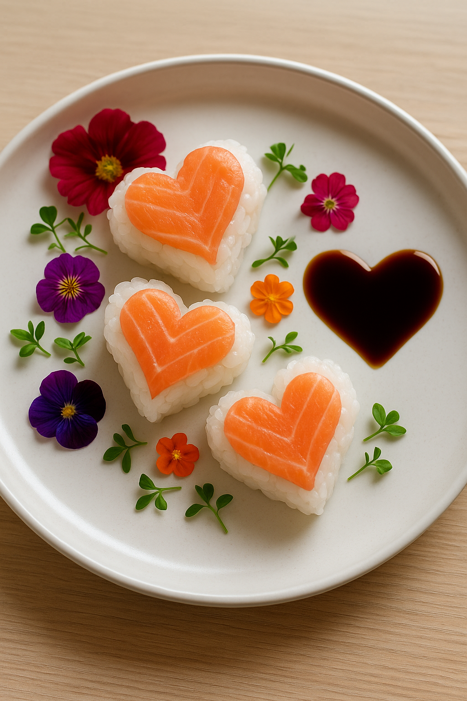
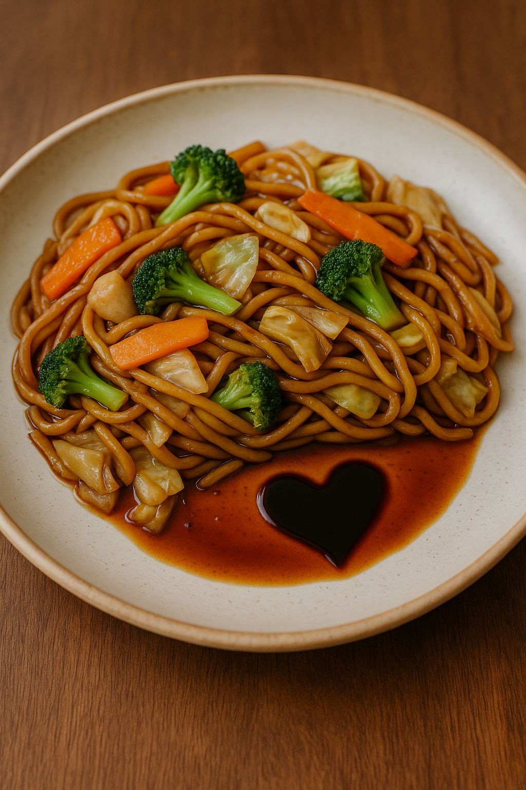

Um sushi feito para encantar! Combina o frescor

Um yakissoba quentinho e cheio de amor,
Crocante por fora, macio por dentro e
recheado de amor! Um guioza feito pa-
ra adoçar o momento e dizer “te amo”
de um jeito delicioso.